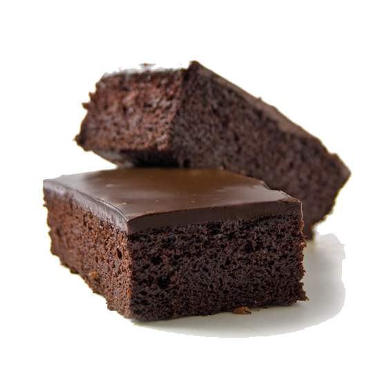

Brownie Tarifi
Brownie ya da bizim genel olarak yazdığımız adıyla browni.
İçerisinde az un olması sebebiyle kıvamı bildiğimiz keklerden ve
tatlılardan çok daha farklı.
Çikolata tadının buram buram hissedildiği bu enfes tarifin kıvamı hafif
nemli olur. Yerken ağızda kuru bir tat bırakmaz.
Tarif:
Sena Eyüpoğlu
Kaç kişilik: 8 kişilik
Hazırlama süresi: 15 dakika
Pişirme süresi: 30 dakika

Brownie Tarifi İçin Malzemeler
- 300 gram bitter çikolata (iri parçalanmış)
- 3 adet yumurta
- 150 gram tereyağı
- 1 su bardağı toz şeker
- 1 su bardağı un
- 1 paket vanilya
Brownie Tarifi Nasıl Yapılır?
- Tereyağını minik bir sos tenceresinin içerisinde eritin.
-
Eridiği gibi ocaktan alın ve tereyağınız henüz sıcakken parça
parça böldüğünüz çikolataları içerisine aktarın. Tereyağının
sıcağı ile erimesini sağlayın.
-
Ardından tereyağlı çikolata karışımını oda sıcaklığında soğuması
için bir kenara alın.
-
Bir kabın içerisine yumurtaları alın, şekeri de ilave ederek
güzelce çırpın.
-
Çırpılan şekerle yumurtaların üzerine azar azar tereyağlı
çikolatalı karışımı aktarın ve karıştırmaya devam edin.
-
Tüm karışımı ekleyip karıştırdıktan sonra un ve vanilyayı eleyerek
üzerine ilave edin. Spatula yardımıyla brownie harcını tüm
malzemeler birleşinceye dek katlayarak karıştırın.
-
Ardından yağlanmış ya da pişirme kağıdı serilmiş 20 cm'lik kare
kek kalıbına hazırladığınız karışımı aktarın. Üst kısmını
spatulayla düzelti.
-
160 derecede önceden ısıtılmış fansız fırında 30-35 dakika kadar
pişirin. Üzeri hafif çatlak bir görünüm alınca fırından çıkarın ve
oda sıcaklığında en az 1 saat kadar dinlendirin.
-
Dinlendikçe kıvamı güzelleşecektir. Dinlendikten sonra
dilimleyerek servis edebilirsiniz.
Bon Appétit... :)